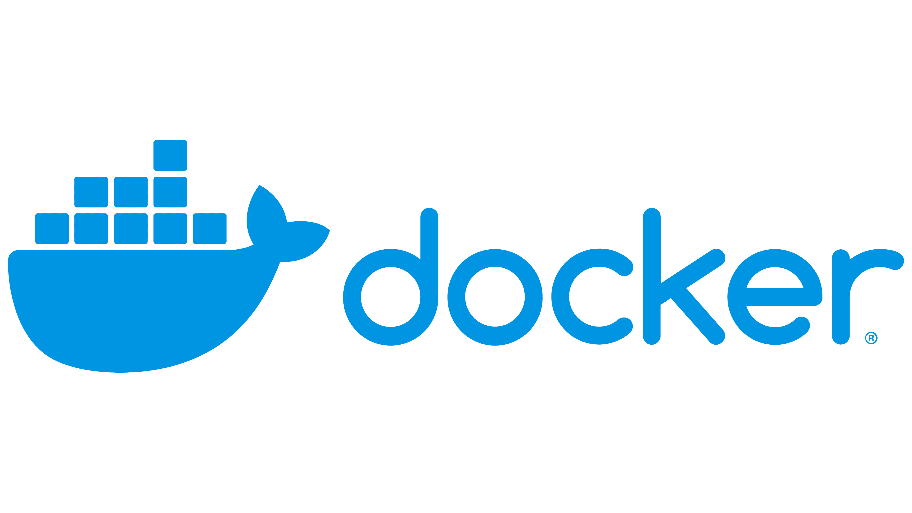
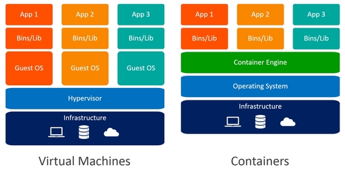

Docker

Introduction
What is Docker
an open-source project that automates the deployment of software applications inside containers by providing an additional layer of abstraction and automation of OS-level virtualization on Linux.
Let’s begin with a lengthy analogy that will hopefully motivate the usefulness of Docker (and send light on the wordy definitions, as given above). I have summarised the analogy from this post, so have a look there if anything immediately below does not make sense.
Let’s think about shipping containers (part of Docker logo). Before shipping containers were used, international trade was inefficient, workers would fill ships up with cargo of different sizes and requirements (e.g. fragile or refrigerated). Depending on the size and shape of the ship vs. the size and shape of the cargo a lot of the time the cargo was not compatible or would result in it perishing/breaking.
Then came along containers,
- Containers were standardised so that loading and unloading became efficient.
- Anything that happened inside the container was the containers fault and not the ships. The merchants were responsible for securing everything inside.
- The containers only need a sturdy enough ship to carry them (i.e. they don’t care about model, shape or size).
What happens if the ship sinks (i.e. computer goes down, OS runs out of memory), unlike a shipping container where its contents are lost. You use a Dockerfile (analogous to a seed) to sprout up a new container. Re-creating the container is very easy, they can also be set-up so that backups are kept or that another container will be automatically birthed and carry on the task if one goes down.
Why hasn’t Docker taken over. Similar to international trade, shipping containers are very helpful, but they need someone to load, unload and ship. In the same way, the infrastructure necessary to fully take advantage of Docker is still on its way.
Take away
Docker containers package everything needed. e.g. If you order a car building kit you would get a big container containing all the different parts in smaller boxes vs. picking all individual parts at separate stores.
Predictable environment. To re-make another car you can re-order the same package and be confident you’ll get the exact same kit vs. having to revisit all the stores again, likely to make a mistake.
Docker isolated from other packages. e.g. If you are building your car alongside a motorbike project you would two separate piles for your parts vs. having all the parts in one pile and accidentally using a screw that may initially fit but ends up falling out and ruining the car.
Docker vs. Virtual Machine

Below is a summary of the following post, I would encourage reading through the post for more detail.
Virtual Machine
A virtual machine is a virtual server that emulates a hardware server. i.e Hardware not in your computer is used to create a full computer environment that you can use to run an application. For example parallels can be used as an Apple user to run Windows applications on their Apple computer. NOTE: You will be in a Windows environment so you cannot run an Apple application but you can transfer files back and forth.
Docker
Docker uses containers that are platform independent (run across Windows and Linux). It’s main purpose is to run microservice applications, exactly what we need for neuroimaging applications. Docker is not a one-size-fits-all solution.
Differences
- Docker isolates individual applications vs. VM isolating entire systems (i.e. you can use containers inside VM’s)
- A Docker container can boot in less than a second vs. VM can take up to a few minutes
- Use a Docker container to package code and its dependencies so that the code is easily shared with Dev, QA and IT.
- Docker has version control, can be compared to GitHub
NOTE: Docker containers are lightweight compared to VM’s however, similar to having an empty or even unused container on a ship. It is advised to remove the container, remember (like a seed) it is easy to re-create the container if you have a Docker File.
Let’s Use Docker
Getting Started
Install
Terminology
- Images: The blueprints of our application which form the basis of containers.
- Containers: Created from Docker images and run the actual application.
- Docker Daemon: The background service running on the host that manages building, running and distributing Docker containers. The daemon is the process that runs in the operating system which clients talk to.
- Docker Client: The command line tool that allows the user to interact with the daemon.
- Docker Hub: A registry of Docker images (similar idea to GitHub or HomeBrew).
Set-up
Test the install with
docker run hello-worldCommands
To take an image from the Docker Hub
docker pull <name-of-image>To check the images on the system
docker imagesTo run a Docker container based on the image. NOTE: Without any arguments, generally not much will happen. If you run a neuroimaging function, generally the function usage will be output.
docker run <name-of-image>Here is a helpful link for docker run options: link
Using the container ID output from ‘docker images’ you can remove the container to free up space.
docker rm <name-of-image>If the Docker container creates/manipulates files, unless otherwise specified these files are part of the container and will be removed when the container is. Read more about it here
You will need to pass the -v flag.
For example:
- Inside the container the app creates /usr/src/app/logs
- To map to host machine -v ~/logs:/usr/src/app/logs